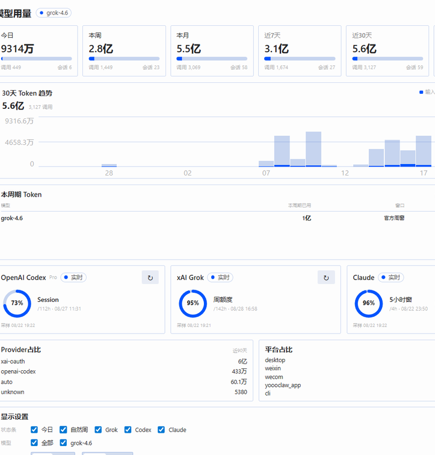
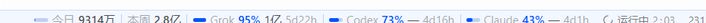
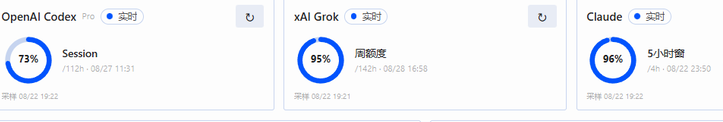

整页看板

右下角状态条

悬停某一家，只弹出这一家的额度环和日 / 周 / 月，不掺另外两家，也不显示上下文或会话。
官方额度

口径
| 今日 / 本周 / 本月 | 上海时区自然周期，按会话开始时间归属 |
|---|---|
| 近 7 / 30 / 90 天 | 滚动窗口，标签不会写成「本月」 |
| 官方额度 | 账户接口或本机额度快照；不用本地 Token 反推会员余量 |
安装
hermes plugins install chenleshu/hermes-usage-center hermes plugins enable usage-center
Desktop Settings → Plugins 打开本插件。需要 Hermes ≥ 0.20.4。